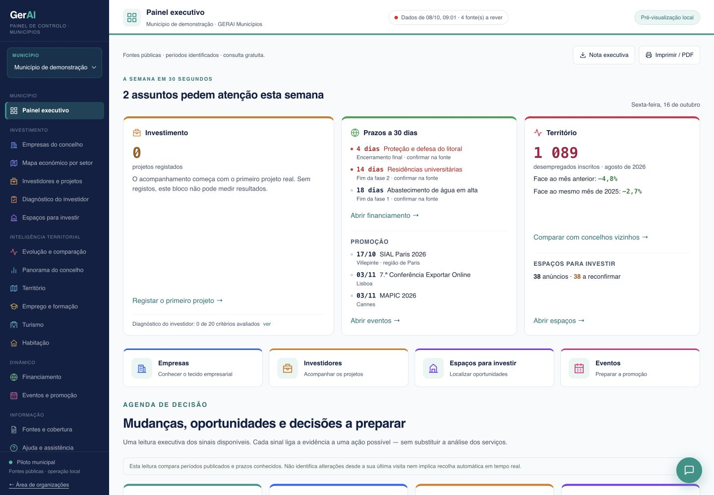
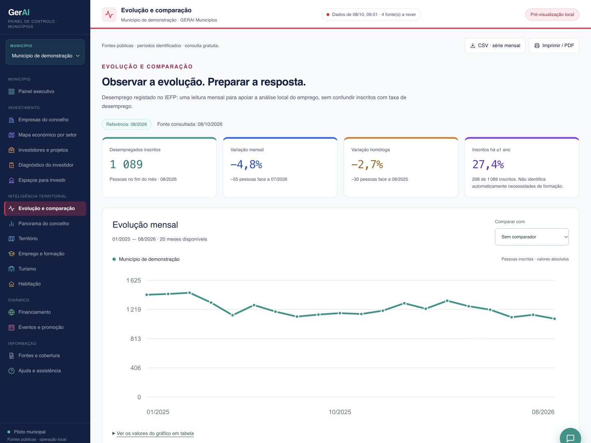
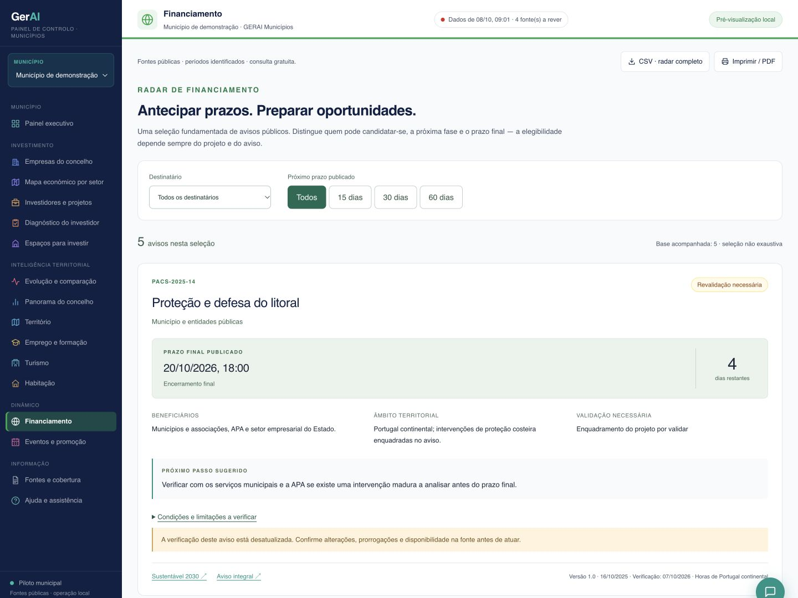
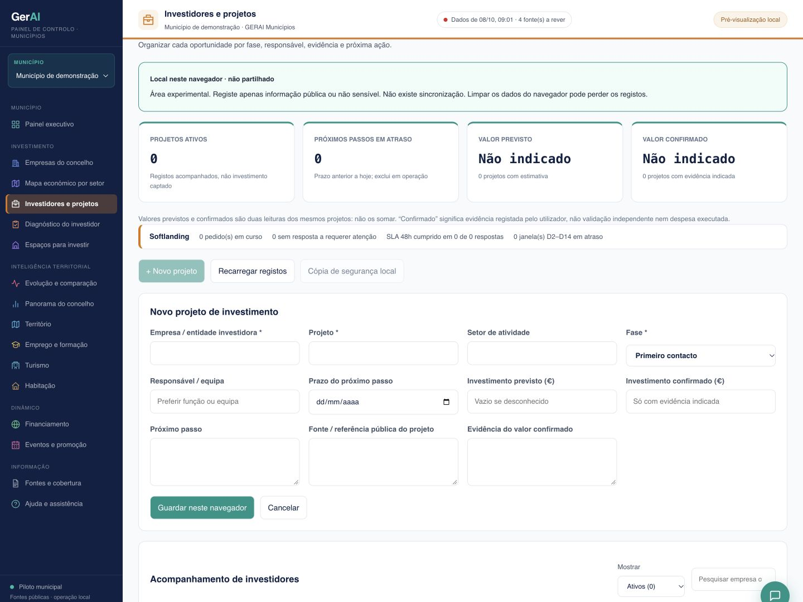

Evolução e comparação
Leia indicadores económicos e demográficos ao longo do tempo e compare territórios, sem misturar períodos ou fontes.
Perceber o que está a mudar.INTELIGÊNCIA TERRITORIAL PARA MUNICÍPIOS
Da informação dispersa a uma visão integrada. Conheça o tecido económico, antecipe oportunidades e acompanhe quem quer investir no seu território.
Fontes públicas identificadas · Contexto local · Acesso por equipa

01 Conhecer o território
02 Antecipar oportunidades
03 Acompanhar o investimento
DENTRO DA GERAI MUNICÍPIOS
Veja os ecrãs reais da plataforma. Selecione uma área para explorar a informação e as ferramentas disponíveis à equipa municipal.
Capturas reais da interface, obtidas em ambiente local a 16/10/2026, com identificação municipal neutralizada. Indicadores de fontes públicas e formulário de projetos vazio. São imagens, não dados em tempo real. A cobertura depende de cada município.

Série mensal do emprego, variações e períodos de referência, no ecrã real da plataforma.
Ver captura em tamanho real
Filtros, destinatários, prazos e estado de validação dos avisos. Os prazos visíveis são os da captura e devem ser reconfirmados na fonte.
Ver captura em tamanho real
Formulário real, sem preenchimento: fase, responsável, próximo passo e evidência. Nenhum investidor, contacto ou negociação foi carregado.
Ver captura em tamanho realUMA VISÃO INTEGRADA
Áreas de trabalho ligadas às perguntas do executivo e à operação diária dos serviços municipais.
Leia indicadores económicos e demográficos ao longo do tempo e compare territórios, sem misturar períodos ou fontes.
Perceber o que está a mudar.Explore as atividades identificadas por setor e localização. Distinga a presença observada de um cadastro empresarial completo.
Conhecer melhor o tecido económico.Consulte avisos e prazos, com ligação às fontes oficiais, para preparar a análise de enquadramento e elegibilidade.
Transformar atenção em preparação.Acompanhe contactos, fases, responsáveis e próximas ações numa área reservada à equipa autorizada.
Dar continuidade a cada oportunidade.Ligue a procura de investimento à oferta de espaços disponível, quando exista catálogo integrado para o município.
Aproximar o projeto do lugar certo.Organize a preparação de eventos nacionais e europeus, considerando o setor, o público e os objetivos do território.
Promover com foco e continuidade.O QUE MUDA NO TRABALHO DA EQUIPA
Sinais fundamentados, contexto e limitações à vista. Uma base comum para discutir prioridades e decidir onde aprofundar.
Projetos organizados por fase, com responsáveis e próximas ações. Menos dependência de apontamentos dispersos.
Conhecimento do tecido económico, dos espaços e das oportunidades para apoiar a relação com empresas e investidores.
CONFIANÇA COMEÇA NA EVIDÊNCIA
Inteligência territorial não é prometer certezas. É tornar a informação mais clara, rastreável e útil à decisão.
De publicações abertas do IEFP, da Pordata e do INE, fontes oficiais de financiamento, organizadores de eventos e outras fontes públicas identificadas. A cobertura varia por território e tema.
Não. A recolha pode ser programada, mas cada fonte tem a sua periodicidade. Uma consulta diária não significa novos dados diários. O período de referência e a data de consulta devem ser lidos em conjunto.
Os indicadores têm origem em fontes públicas. Os registos de investidores e projetos são de acesso reservado à equipa autorizada do município, não sendo expostos nesta landing page.
Começamos por identificar as prioridades da equipa e verificar a cobertura dos dados. Os módulos, as fontes e o acesso são configurados em função do território. Não se presume que todos os municípios tenham já informação disponível.
Não necessariamente. As fontes públicas podem identificar estabelecimentos e locais de atividade sem comprovar a entidade jurídica. A cobertura, a classificação e a geolocalização têm limitações; ausência no mapa não significa ausência de atividade.
O PRÓXIMO PASSO É UMA CONVERSA
Conte-nos as prioridades do seu município.
Mostramos como a GERAI pode apoiar o trabalho da equipa.